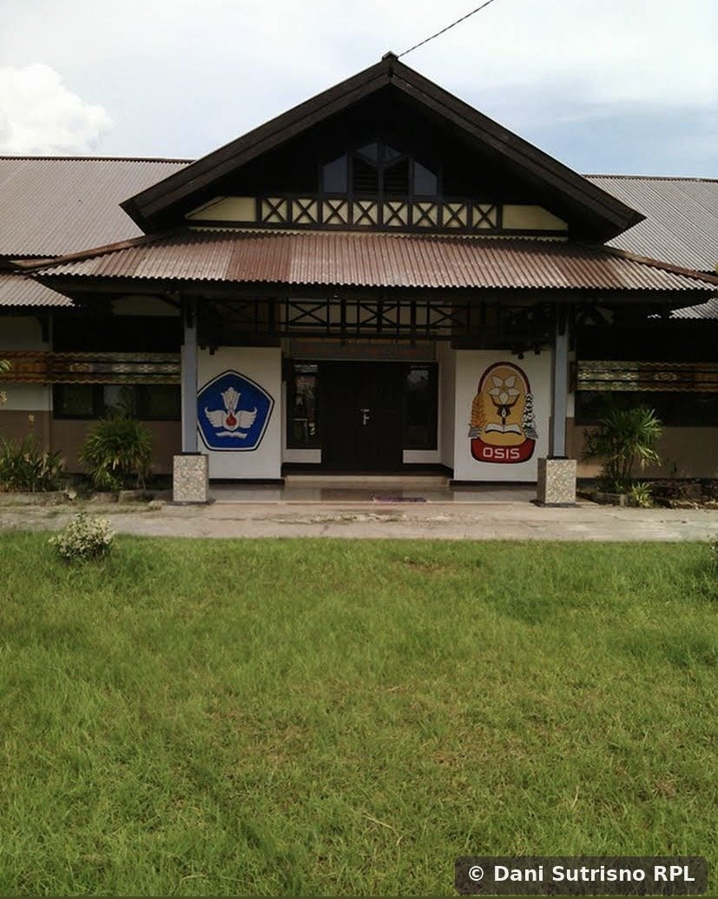
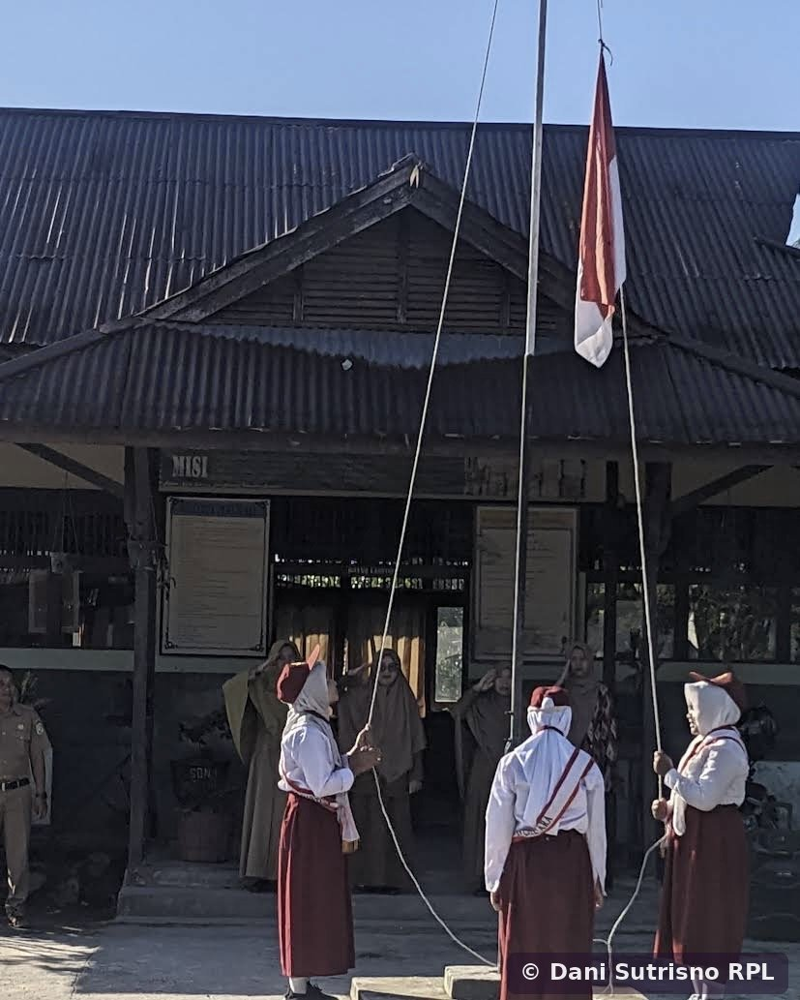

Fasilitas Pendidikan di Seburing
- Sekolah DasarSDN 11 Seburing
- Sekolah DasarSDN 15 Seburing Gersik
- Sekolah Menengah PertamaSMPN 2 Semparuk
- Madrasah Ibtidaiyah SwastaMIS Nurul Huda Semparuk
- Jenjang lanjutanTersedia di Kecamatan Semparuk
Anak-anak Desa Seburing dapat menempuh pendidikan dasar tanpa harus jauh dari kampung halaman, dengan keberadaan SDN 11 Seburing, SDN 15 Seburing Gersik, MIS Nurul Huda Semparuk, dan SMPN 2 Semparuk yang berlokasi langsung di desa ini. Untuk jenjang menengah atas, warga dapat melanjutkan ke sekolah-sekolah lain yang tersebar di Kecamatan Semparuk.
Di sisi pemerintahan, Desa Seburing mengambil langkah maju dengan mengembangkan Sistem Informasi Desa berbasis OpenSID untuk pelayanan publik yang lebih efisien dan transparan. Kegiatan Satuan Perlindungan Masyarakat (Sat-Linmas) desa turut berjalan untuk menjaga ketertiban dan keamanan lingkungan, melengkapi upaya pembangunan yang dijalankan lewat semangat gotong royong warga.

SMPN 2 Semparuk — sekolah menengah pertama di jantung Seburing
SMPN 2 Semparuk didirikan pada 29 Oktober 1998 melalui Surat Keputusan Nomor 13.C/O/1998, saat wilayah ini masih berada di bawah Kecamatan Pemangkat sebelum Semparuk mekar menjadi kecamatan tersendiri pada 2003. Sekolah ini dibangun di Jalan Pendidikan, tepat di Desa Seburing, agar anak-anak dari Seburing dan desa-desa sekitarnya tidak perlu menempuh jarak jauh hanya untuk melanjutkan pendidikan ke jenjang SMP.
Sejak berdiri, gedung berarsitektur atap tinggi khas bangunan sekolah negeri ini menjadi salah satu bangunan paling dikenal di Seburing, lengkap dengan lapangan upacara dan lambang OSIS yang menghiasi bagian depannya — simbol tempat generasi muda desa dibina, berorganisasi, dan tumbuh bersama.

SDN 11 Seburing — tempat langkah pertama pendidikan warga
Sepuluh tahun setelah SMPN 2 Semparuk berdiri, giliran SDN 11 Seburing dibangun pada 25 Agustus 2008 berdasarkan Surat Keputusan Nomor 061/IMB/05/VIII/2008, berlokasi di Jalan Raya Dusun Kartini di atas lahan seluas 1.605 meter persegi. Kehadirannya melengkapi fasilitas pendidikan dasar di Seburing, menyusul SDN 15 Seburing Gersik yang lebih dulu berdiri di dusun tetangga.
Di halaman sekolah inilah, setiap pekan, anak-anak Seburing mengenakan seragam merah-putih dan berbaris mengikuti upacara bendera — ritual sederhana yang menjadi awal mula mereka mengenal disiplin, kebersamaan, dan rasa cinta tanah air, sebelum kelak melanjutkan langkah ke SMPN 2 Semparuk yang tak jauh dari kampung mereka sendiri.